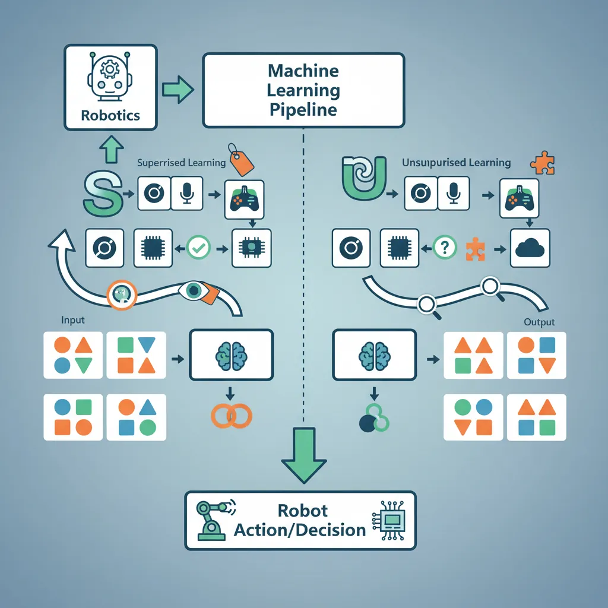
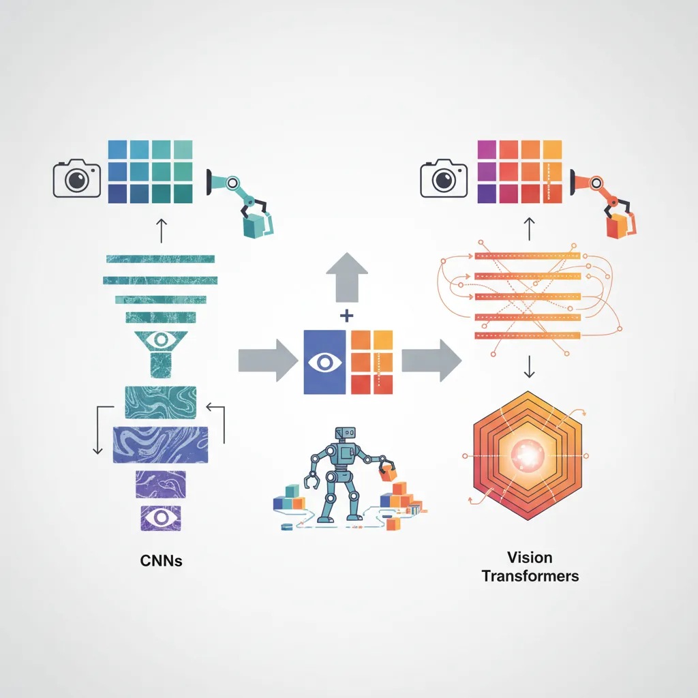
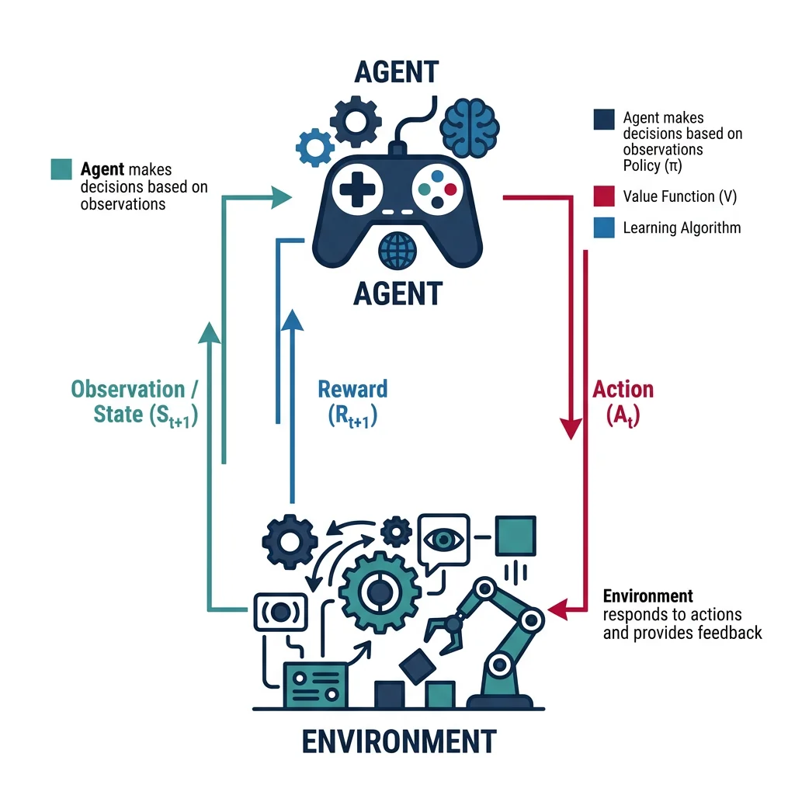
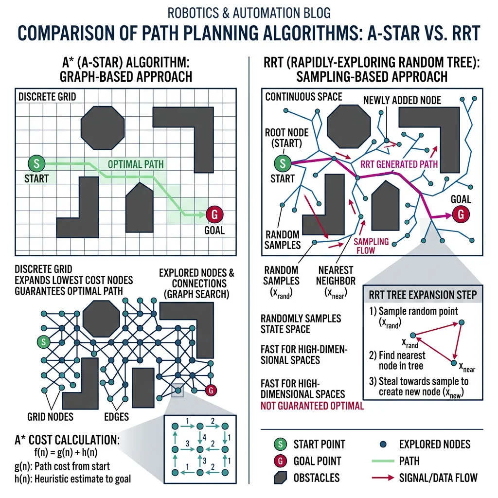
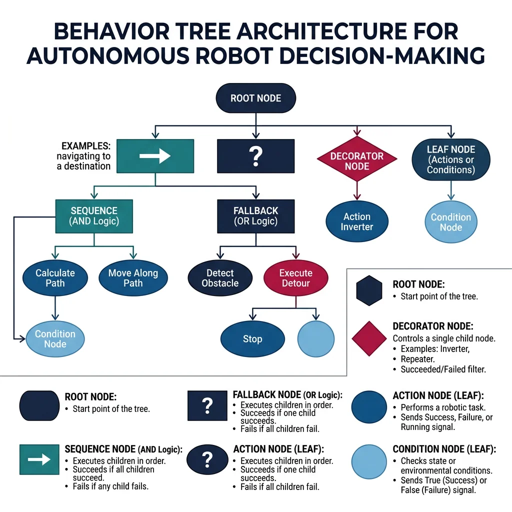

Machine Learning for Robotics
Robotics & Automation Mastery
Introduction to Robotics
History, types, DOF, architectures, mechatronics, ethicsSensors & Perception Systems
Encoders, IMUs, LiDAR, cameras, sensor fusion, Kalman filters, SLAMActuators & Motion Control
DC/servo/stepper motors, hydraulics, drivers, gear systemsKinematics (Forward & Inverse)
DH parameters, transformations, Jacobians, workspace analysisDynamics & Robot Modeling
Newton-Euler, Lagrangian, inertia, friction, contact modelingControl Systems & PID
PID tuning, state-space, LQR, MPC, adaptive & robust controlEmbedded Systems & Microcontrollers
Arduino, STM32, RTOS, PWM, serial protocols, FPGARobot Operating Systems (ROS)
ROS2, nodes, topics, Gazebo, URDF, navigation stacksComputer Vision for Robotics
Calibration, stereo vision, object recognition, visual SLAMAI Integration & Autonomous Systems
ML, reinforcement learning, path planning, swarm roboticsHuman-Robot Interaction (HRI)
Cobots, gesture/voice control, safety standards, social roboticsIndustrial Robotics & Automation
PLC, SCADA, Industry 4.0, smart factories, digital twinsMobile Robotics
Wheeled/legged robots, autonomous vehicles, drones, marine roboticsSafety, Reliability & Compliance
Functional safety, redundancy, ISO standards, cybersecurityAdvanced & Emerging Robotics
Soft robotics, bio-inspired, surgical, space, nano-roboticsSystems Integration & Deployment
HW/SW co-design, testing, field deployment, lifecycleRobotics Business & Strategy
Startups, product-market fit, manufacturing, go-to-marketComplete Robotics System Project
Autonomous rover, pick-and-place arm, delivery robot, swarm simThink of traditional robots as train locomotives — they follow fixed tracks (programs) with no ability to deviate. AI-powered robots are more like experienced taxi drivers — they perceive their environment, learn from experience, plan routes dynamically, and make split-second decisions in unpredictable situations. This transformation from rigid automation to adaptive intelligence is what separates a factory arm repeating the same weld 10,000 times from a surgical robot that adjusts its grip based on tissue compliance in real time.

Supervised & Unsupervised Learning
Supervised learning teaches a robot by showing it labeled examples — "this image contains a bolt," "this force reading indicates a collision." The model learns a mapping from inputs to outputs, then generalizes to new, unseen inputs. In robotics, supervised learning powers object classification, grasp quality prediction, terrain classification, and predictive maintenance.
Key supervised learning algorithms used in robotics:
| Algorithm | Robotics Application | Input Type | Strengths |
|---|---|---|---|
| Linear/Logistic Regression | Force prediction, binary fault detection | Numeric features | Fast, interpretable, low compute |
| Random Forest | Terrain classification, sensor fusion | Mixed features | Handles noise, feature importance |
| SVM | Gesture recognition, anomaly detection | High-dim vectors | Works well with small datasets |
| k-NN | Grasp quality lookup, pose matching | Feature vectors | Simple, no training phase |
| CNN (Convolutional) | Object detection, visual inspection | Images | State-of-art for vision tasks |
| RNN / LSTM | Trajectory prediction, speech commands | Sequences | Captures temporal patterns |
import numpy as np
from sklearn.ensemble import RandomForestClassifier
from sklearn.model_selection import train_test_split
from sklearn.metrics import classification_report
# Simulate terrain sensor data: [vibration_rms, pitch_angle, slip_ratio, current_draw]
np.random.seed(42)
n_samples = 500
# Generate labeled terrain data
terrain_types = ['concrete', 'gravel', 'grass', 'sand']
X, y = [], []
for terrain_id, terrain in enumerate(terrain_types):
base = [0.1, 2.0, 0.02, 1.5] # concrete baseline
noise_scale = [0.05, 1.0, 0.01, 0.3]
offsets = [[0, 0, 0, 0], [0.3, 5.0, 0.05, 0.8],
[0.15, 3.0, 0.08, 0.5], [0.5, 8.0, 0.12, 1.2]]
for _ in range(n_samples // 4):
sample = [base[j] + offsets[terrain_id][j] + np.random.normal(0, noise_scale[j])
for j in range(4)]
X.append(sample)
y.append(terrain)
X = np.array(X)
y = np.array(y)
# Train terrain classifier
X_train, X_test, y_train, y_test = train_test_split(X, y, test_size=0.3, random_state=42)
clf = RandomForestClassifier(n_estimators=100, random_state=42)
clf.fit(X_train, y_train)
# Evaluate
y_pred = clf.predict(X_test)
print("Terrain Classification Report:")
print(classification_report(y_test, y_pred))
# Feature importance
features = ['vibration_rms', 'pitch_angle', 'slip_ratio', 'current_draw']
importances = clf.feature_importances_
for feat, imp in sorted(zip(features, importances), key=lambda x: -x[1]):
print(f" {feat}: {imp:.3f}")
Unsupervised learning finds hidden structure in unlabeled data. In robotics, this is invaluable for anomaly detection (finding unusual vibration patterns that indicate bearing failure), clustering (grouping similar manipulation strategies), and dimensionality reduction (compressing high-dimensional sensor data for real-time processing).
import numpy as np
from sklearn.cluster import KMeans
from sklearn.preprocessing import StandardScaler
# Simulate robot joint telemetry: [joint_temp, vibration, current, cycle_time]
np.random.seed(42)
n_readings = 300
# Normal operation cluster
normal = np.random.normal(loc=[45, 0.3, 2.1, 1.5], scale=[3, 0.05, 0.2, 0.1], size=(200, 4))
# Degraded bearing cluster (higher temp & vibration)
degraded = np.random.normal(loc=[65, 0.8, 2.8, 1.7], scale=[4, 0.1, 0.3, 0.15], size=(70, 4))
# Overloaded cluster (high current, slow cycle)
overloaded = np.random.normal(loc=[55, 0.5, 4.5, 2.3], scale=[3, 0.08, 0.4, 0.2], size=(30, 4))
telemetry = np.vstack([normal, degraded, overloaded])
scaler = StandardScaler()
telemetry_scaled = scaler.fit_transform(telemetry)
# K-Means clustering to discover operational modes
kmeans = KMeans(n_clusters=3, random_state=42, n_init=10)
labels = kmeans.fit_predict(telemetry_scaled)
# Analyze clusters
for cluster_id in range(3):
mask = labels == cluster_id
cluster_data = telemetry[mask]
print(f"\nCluster {cluster_id} ({mask.sum()} samples):")
for i, name in enumerate(['Temp(°C)', 'Vibration(g)', 'Current(A)', 'CycleTime(s)']):
print(f" {name}: mean={cluster_data[:, i].mean():.2f}, std={cluster_data[:, i].std():.2f}")
Case Study: Predictive Maintenance at Fanuc
Fanuc's FIELD (FANUC Intelligent Edge Link & Drive) system collects data from thousands of factory robots. Using a combination of supervised learning (predicting remaining useful life of components) and unsupervised anomaly detection (flagging unusual vibration patterns via autoencoders), they achieved 40% reduction in unplanned downtime. The system processes 20+ sensor channels per robot at 1 kHz, training gradient-boosted models on historical failure data. When anomaly scores exceed thresholds, maintenance is scheduled preemptively — shifting from reactive replacement to predictive servicing.
Deep Learning for Robotics
Deep learning has revolutionized robotics perception. Convolutional Neural Networks (CNNs) enable robots to "see" with human-like accuracy, while Transformers are now powering multi-modal reasoning — combining vision, language, and action into unified models.

- CNNs — Object detection (YOLOv8), semantic segmentation (U-Net), depth estimation (MiDaS)
- Vision Transformers (ViT) — Scene understanding, attention-based feature extraction
- Autoencoders — Anomaly detection, dimensionality reduction, state representation
- GANs — Synthetic training data generation, sim-to-real domain adaptation
- Diffusion Models — Robot trajectory generation, dexterous manipulation policies
- Foundation Models (RT-2, Octo) — Language-conditioned robotic control, zero-shot task generalization
import numpy as np
# Simplified CNN forward pass for grasp quality prediction
# In production, use PyTorch/TensorFlow — this illustrates the core concept
def conv2d_simple(image, kernel):
"""Apply a single 3x3 convolution filter to extract features."""
h, w = image.shape
kh, kw = kernel.shape
output = np.zeros((h - kh + 1, w - kw + 1))
for i in range(output.shape[0]):
for j in range(output.shape[1]):
output[i, j] = np.sum(image[i:i+kh, j:j+kw] * kernel)
return output
def relu(x):
"""ReLU activation — introduces non-linearity."""
return np.maximum(0, x)
# Simulate a 16x16 depth image of a graspable object
np.random.seed(42)
depth_image = np.random.rand(16, 16) * 0.5
depth_image[5:11, 5:11] = 0.8 + np.random.rand(6, 6) * 0.1 # Object region
# Edge detection kernel (learns to find grasp edges)
edge_kernel = np.array([[-1, -1, -1],
[-1, 8, -1],
[-1, -1, -1]])
# Forward pass: Conv → ReLU → Global Average Pool → Prediction
features = conv2d_simple(depth_image, edge_kernel)
activated = relu(features)
pooled = activated.mean() # Global average pooling
# Simple threshold classifier (in practice, learned via backpropagation)
grasp_quality = "good" if pooled > 0.5 else "poor"
print(f"Feature activation (pooled): {pooled:.4f}")
print(f"Predicted grasp quality: {grasp_quality}")
print(f"Feature map shape: {activated.shape}")
Case Study: Google RT-2 — Vision-Language-Action Model
Google's RT-2 (Robotics Transformer 2) demonstrated that large vision-language models (VLMs) can directly output robot actions. By fine-tuning a 55B parameter PaLM-E model on 130K robot demonstrations, RT-2 achieved zero-shot generalization — executing tasks described in natural language that it had never been explicitly trained on ("move the banana to the red bowl"). The model reasons about spatial relationships, object properties, and even abstract concepts like "pick up the healthiest snack." This represents a paradigm shift from task-specific ML models to general-purpose robotic intelligence, where a single model handles perception, reasoning, and action generation end-to-end.
Reinforcement Learning
While supervised learning requires labeled data, Reinforcement Learning (RL) lets robots learn through trial and error — just like a child learning to walk. The robot (agent) takes actions in an environment, receives rewards or penalties, and gradually discovers optimal behavior. RL is the backbone of autonomous decision-making, from dexterous manipulation to drone acrobatics.

The RL Framework
Every RL problem is formalized as a Markov Decision Process (MDP):
- State (s) — Robot's current situation (joint angles, sensor readings, object positions)
- Action (a) — What the robot can do (move joint, apply force, change speed)
- Reward (r) — Scalar feedback signal (positive for progress, negative for mistakes)
- Policy (π) — The learned strategy: π(s) → a (maps states to actions)
- Value Function V(s) — Expected cumulative future reward from state s
- Discount Factor (γ) — How much future rewards are worth vs immediate (0.9-0.99 typical)
Q-Learning: The Foundation
Q-Learning is the simplest model-free RL algorithm. It learns a Q-table mapping every (state, action) pair to its expected return, then picks the action with the highest Q-value. The update rule is:
Where α = learning rate, γ = discount factor, s' = next state, max over all possible next actions a'.
import numpy as np
# Q-Learning for a simple robot navigation grid
# Robot must navigate from start (0,0) to goal (4,4) avoiding obstacles
np.random.seed(42)
# Grid world: 0 = free, -1 = obstacle, +10 = goal
grid_size = 5
grid = np.zeros((grid_size, grid_size))
grid[1, 1] = -1 # Obstacle
grid[2, 3] = -1 # Obstacle
grid[3, 1] = -1 # Obstacle
grid[4, 4] = 10 # Goal
# Actions: 0=up, 1=down, 2=left, 3=right
actions = [(-1, 0), (1, 0), (0, -1), (0, 1)]
action_names = ['Up', 'Down', 'Left', 'Right']
n_actions = 4
# Initialize Q-table
Q = np.zeros((grid_size, grid_size, n_actions))
# Hyperparameters
alpha = 0.1 # Learning rate
gamma = 0.95 # Discount factor
epsilon = 0.2 # Exploration rate (epsilon-greedy)
episodes = 1000
def step(state, action_idx):
"""Take action, return next_state and reward."""
dy, dx = actions[action_idx]
ny, nx = state[0] + dy, state[1] + dx
# Boundary check
if ny < 0 or ny >= grid_size or nx < 0 or nx >= grid_size:
return state, -1 # Hit wall
if grid[ny, nx] == -1:
return state, -5 # Hit obstacle
reward = grid[ny, nx] if grid[ny, nx] == 10 else -0.1 # Step cost
return (ny, nx), reward
# Training loop
for ep in range(episodes):
state = (0, 0)
for _ in range(50): # Max steps per episode
# Epsilon-greedy action selection
if np.random.random() < epsilon:
action = np.random.randint(n_actions)
else:
action = np.argmax(Q[state[0], state[1]])
next_state, reward = step(state, action)
# Q-Learning update
best_next = np.max(Q[next_state[0], next_state[1]])
Q[state[0], state[1], action] += alpha * (
reward + gamma * best_next - Q[state[0], state[1], action]
)
state = next_state
if reward == 10:
break
# Extract learned policy
print("Learned Policy (best action at each cell):")
for y in range(grid_size):
row = ""
for x in range(grid_size):
if grid[y, x] == -1:
row += " ██ "
elif grid[y, x] == 10:
row += " 🎯 "
else:
best = np.argmax(Q[y, x])
symbols = ['↑', '↓', '←', '→']
row += f" {symbols[best]} "
print(row)
print(f"\nQ-value at start (0,0): {Q[0, 0].max():.2f}")
Deep Reinforcement Learning
Q-tables don't scale to continuous state spaces (infinite possible joint angles). Deep Q-Networks (DQN) replace the table with a neural network that approximates Q(s, a). More advanced algorithms like PPO (Proximal Policy Optimization) and SAC (Soft Actor-Critic) directly learn the policy network, making them the standard for modern robot learning.
| Algorithm | Type | Action Space | Sample Efficiency | Robotics Use |
|---|---|---|---|---|
| DQN | Value-based | Discrete | Medium | Grid navigation, discrete decisions |
| DDPG | Actor-Critic | Continuous | Medium | Robotic arm control, locomotion |
| PPO | Policy Gradient | Both | Low | Locomotion, manipulation (most popular) |
| SAC | Actor-Critic | Continuous | High | Dexterous manipulation, real robot training |
| TD3 | Actor-Critic | Continuous | High | Stable continuous control, smooth motions |
| Dreamer (v3) | Model-based | Both | Very High | Sample-efficient learning from pixels |
import numpy as np
# Simplified Policy Gradient (REINFORCE) for robot reaching task
# Robot arm with 2 joints must reach a target position
np.random.seed(42)
# Environment: 2-joint planar arm
link_lengths = [1.0, 0.8]
target = np.array([0.5, 1.2])
def forward_kinematics(angles):
"""Compute end-effector position from joint angles."""
x = link_lengths[0] * np.cos(angles[0]) + link_lengths[1] * np.cos(angles[0] + angles[1])
y = link_lengths[0] * np.sin(angles[0]) + link_lengths[1] * np.sin(angles[0] + angles[1])
return np.array([x, y])
def get_reward(angles):
"""Reward = negative distance to target (closer = higher reward)."""
ee_pos = forward_kinematics(angles)
distance = np.linalg.norm(ee_pos - target)
return -distance
# Simple policy: Gaussian distribution over joint angle adjustments
# Parameters: mean (mu) and std (sigma) for each joint
mu = np.array([0.0, 0.0]) # Mean action
sigma = np.array([0.5, 0.5]) # Exploration noise
learning_rate = 0.01
# Current joint angles
angles = np.array([np.pi/4, np.pi/4])
# Training with REINFORCE
print("Training Policy Gradient (REINFORCE):")
for episode in range(200):
# Sample action from policy
action = mu + sigma * np.random.randn(2)
# Apply action (adjust angles)
new_angles = angles + action * 0.1
reward = get_reward(new_angles)
# Policy gradient update (simplified REINFORCE)
# Gradient of log-probability of Gaussian policy
log_grad = (action - mu) / (sigma ** 2)
mu += learning_rate * reward * log_grad
if (episode + 1) % 50 == 0:
test_angles = angles + mu * 0.1
ee_pos = forward_kinematics(test_angles)
dist = np.linalg.norm(ee_pos - target)
print(f" Episode {episode+1}: distance to target = {dist:.4f}, "
f"mu = [{mu[0]:.3f}, {mu[1]:.3f}]")
final_angles = angles + mu * 0.1
final_pos = forward_kinematics(final_angles)
print(f"\nTarget: {target}")
print(f"Reached: [{final_pos[0]:.3f}, {final_pos[1]:.3f}]")
print(f"Final distance: {np.linalg.norm(final_pos - target):.4f}")
Sim-to-Real Transfer
The biggest challenge in robot RL is that real-world training is slow, expensive, and dangerous. A robot learning to walk might fall thousands of times — fine in simulation, catastrophic on a $50,000 physical platform. Sim-to-Real transfer trains policies in physics simulators (Isaac Sim, MuJoCo, PyBullet) then deploys them to real hardware.
Key techniques to bridge the sim-to-real gap:
- Domain Randomization — Randomize physics parameters (friction 0.3–0.9, mass ±20%, latency 0–50ms) during training so the policy becomes robust to variation. If it works across 1000 random environments, it likely works in reality.
- System Identification — Carefully measure real robot parameters (joint friction, backlash, sensor delays) and set simulation to match exactly.
- Progressive Nets / Fine-Tuning — Pre-train in sim, then fine-tune on a small amount of real-world data to correct mis-calibrations.
- Domain Adaptation (CycleGAN) — Transform simulated camera images to look realistic using adversarial networks, so vision policies trained on synthetic images work on real cameras.
- Teacher-Student Distillation — Train a "teacher" policy with privileged information in sim (ground-truth contacts, object poses), then distill into a "student" policy that uses only realistic sensor inputs.
Case Study: OpenAI → NVIDIA Isaac — Sim-to-Real at Scale
OpenAI's Dactyl system trained a Shadow Dexterous Hand to manipulate a Rubik's Cube entirely in simulation — using massive domain randomization across 64,000 CPU cores. Physics parameters (friction, object mass, actuator noise) were randomized so aggressively that the real world became "just another domain." The policy transferred to the physical hand with zero real-world training data. NVIDIA extended this with Isaac Gym, training 4,096 robot environments in parallel on a single GPU, achieving 1000× speedups. Their Anymal quadruped learned robust locomotion over rocks, stairs, and deformable terrain — policies trained in 20 minutes of GPU time deployed to the real robot with 95% success rate. The key insight: if you randomize enough, reality looks easy.
Path Planning Algorithms
Path planning answers the fundamental question: "How does a robot get from point A to point B without hitting anything?" This is trivially easy for humans walking across a room, but computationally demanding for robots navigating complex, dynamic environments. The choice of algorithm depends on the dimensionality of the space, real-time requirements, and optimality guarantees needed.

A*, Dijkstra, D*
Graph-based planners discretize the environment into a grid or graph, then search for the shortest path. They guarantee finding the optimal path if one exists, but scale poorly to high dimensions.
| Algorithm | Optimal? | Heuristic? | Dynamic Replanning? | Best For |
|---|---|---|---|---|
| Dijkstra's | Yes | No | No | Uniform-cost shortest path, small graphs |
| A* | Yes (admissible h) | Yes | No | Most common, fast with good heuristic |
| D* | Yes | Yes | Yes | Changing environments (new obstacles) |
| D* Lite | Yes | Yes | Yes | Mars rovers, mobile robots (efficient replanning) |
| Theta* | Near-optimal | Yes | No | Any-angle paths (smoother than A*) |
import numpy as np
import heapq
def astar(grid, start, goal):
"""A* pathfinding on a 2D grid.
grid: 2D numpy array (0=free, 1=obstacle)
start: (row, col) tuple
goal: (row, col) tuple
Returns: list of (row, col) waypoints or None
"""
rows, cols = grid.shape
# Heuristic: Manhattan distance (admissible for 4-connected grid)
def heuristic(pos):
return abs(pos[0] - goal[0]) + abs(pos[1] - goal[1])
# Priority queue: (f_score, position)
open_set = [(heuristic(start), start)]
came_from = {}
g_score = {start: 0}
# 4-connected neighbors (up, down, left, right)
neighbors = [(-1, 0), (1, 0), (0, -1), (0, 1)]
while open_set:
f, current = heapq.heappop(open_set)
if current == goal:
# Reconstruct path
path = [current]
while current in came_from:
current = came_from[current]
path.append(current)
return path[::-1]
for dy, dx in neighbors:
neighbor = (current[0] + dy, current[1] + dx)
# Boundary and obstacle check
if (0 <= neighbor[0] < rows and 0 <= neighbor[1] < cols
and grid[neighbor[0], neighbor[1]] == 0):
tentative_g = g_score[current] + 1
if tentative_g < g_score.get(neighbor, float('inf')):
came_from[neighbor] = current
g_score[neighbor] = tentative_g
f_score = tentative_g + heuristic(neighbor)
heapq.heappush(open_set, (f_score, neighbor))
return None # No path found
# Create a warehouse-like grid
grid = np.zeros((10, 10), dtype=int)
grid[1, 2:8] = 1 # Shelf row 1
grid[3, 0:6] = 1 # Shelf row 2
grid[5, 4:10] = 1 # Shelf row 3
grid[7, 1:7] = 1 # Shelf row 4
start = (0, 0)
goal = (9, 9)
path = astar(grid, start, goal)
if path:
print(f"Path found! Length: {len(path)} steps")
# Visualize
display = grid.astype(str)
display[display == '0'] = '·'
display[display == '1'] = '█'
for r, c in path:
display[r, c] = '★'
display[start[0], start[1]] = 'S'
display[goal[0], goal[1]] = 'G'
print("\nWarehouse Grid (S=start, G=goal, ★=path, █=shelves):")
for row in display:
print(' '.join(row))
print(f"\nNodes in path: {len(path)}")
print(f"Explored area ratio: ~{len(path)/np.sum(grid == 0)*100:.1f}%")
else:
print("No path found!")
RRT & PRM
Sampling-based planners avoid discretizing the entire space. Instead, they randomly sample configurations and connect feasible ones, building a tree or graph incrementally. These are essential for high-dimensional planning (6+ DOF arms) where grid-based methods are computationally infeasible.
- RRT (Rapidly-exploring Random Tree) — Grows a tree from the start by randomly sampling points and extending the nearest node toward each sample. Biased toward unexplored space, so it explores quickly.
- RRT* — Optimized variant that rewires the tree to find shorter paths. Asymptotically optimal (converges to best path given infinite time).
- RRT-Connect — Grows two trees (from start and goal) simultaneously, meeting in the middle. Much faster for narrow passages.
- PRM (Probabilistic Roadmap) — Pre-builds a graph of collision-free configurations, then queries it for multiple start-goal pairs. Best for repeated planning in the same environment.
import numpy as np
class RRT:
"""Rapidly-exploring Random Tree for 2D path planning."""
def __init__(self, start, goal, obstacles, bounds, step_size=0.5, max_iter=2000):
self.start = np.array(start)
self.goal = np.array(goal)
self.obstacles = obstacles # List of (center_x, center_y, radius)
self.bounds = bounds # (x_min, x_max, y_min, y_max)
self.step_size = step_size
self.max_iter = max_iter
self.nodes = [self.start]
self.parents = {0: -1}
def is_collision_free(self, p1, p2):
"""Check if line segment p1→p2 is collision-free."""
for ox, oy, r in self.obstacles:
# Distance from line segment to obstacle center
d = p2 - p1
f = p1 - np.array([ox, oy])
a = np.dot(d, d)
b = 2 * np.dot(f, d)
c = np.dot(f, f) - r * r
discriminant = b*b - 4*a*c
if discriminant >= 0:
t1 = (-b - np.sqrt(discriminant)) / (2*a)
t2 = (-b + np.sqrt(discriminant)) / (2*a)
if t1 <= 1 and t2 >= 0:
return False
return True
def plan(self):
"""Run RRT algorithm, return path or None."""
goal_threshold = self.step_size * 1.5
for i in range(self.max_iter):
# Sample random point (10% goal bias)
if np.random.random() < 0.1:
sample = self.goal.copy()
else:
sample = np.array([
np.random.uniform(self.bounds[0], self.bounds[1]),
np.random.uniform(self.bounds[2], self.bounds[3])
])
# Find nearest node
distances = [np.linalg.norm(node - sample) for node in self.nodes]
nearest_idx = np.argmin(distances)
nearest = self.nodes[nearest_idx]
# Steer toward sample
direction = sample - nearest
dist = np.linalg.norm(direction)
if dist < 1e-6:
continue
direction = direction / dist
new_node = nearest + direction * min(self.step_size, dist)
# Check collision
if self.is_collision_free(nearest, new_node):
node_idx = len(self.nodes)
self.nodes.append(new_node)
self.parents[node_idx] = nearest_idx
# Check if goal reached
if np.linalg.norm(new_node - self.goal) < goal_threshold:
# Reconstruct path
path = [self.goal]
idx = node_idx
while idx != -1:
path.append(self.nodes[idx])
idx = self.parents[idx]
return path[::-1]
return None # Failed to find path
# Setup: robot navigating around circular obstacles
obstacles = [(3, 3, 1.5), (7, 2, 1.0), (5, 7, 1.2), (2, 8, 0.8)]
start = (0, 0)
goal = (9, 9)
bounds = (-1, 11, -1, 11)
np.random.seed(42)
rrt = RRT(start, goal, obstacles, bounds, step_size=0.8, max_iter=3000)
path = rrt.plan()
if path:
print(f"RRT path found! {len(path)} waypoints, {len(rrt.nodes)} nodes explored")
print(f"\nWaypoints (first 5 and last 5):")
for i, wp in enumerate(path[:5]):
print(f" WP{i}: ({wp[0]:.2f}, {wp[1]:.2f})")
if len(path) > 10:
print(f" ... ({len(path)-10} more) ...")
for i, wp in enumerate(path[-5:], len(path)-5):
print(f" WP{i}: ({wp[0]:.2f}, {wp[1]:.2f})")
# Path length
total_len = sum(np.linalg.norm(np.array(path[i+1]) - np.array(path[i]))
for i in range(len(path)-1))
straight_line = np.linalg.norm(np.array(goal) - np.array(start))
print(f"\nTotal path length: {total_len:.2f}")
print(f"Straight-line distance: {straight_line:.2f}")
print(f"Path efficiency: {straight_line/total_len*100:.1f}%")
else:
print("RRT failed to find path — try increasing max_iter")
Motion Planning
While path planning finds a geometric route, motion planning adds kinematic and dynamic constraints — joint limits, velocity bounds, torque limits, and smoothness. The result is a time-parameterized trajectory, not just a sequence of waypoints.
Key motion planning concepts:
- Configuration Space (C-Space) — The set of all possible robot configurations. For a 6-DOF arm, C-space is 6-dimensional. Obstacles in workspace map to "forbidden regions" in C-space (C-obstacles).
- Trajectory Optimization — Minimize a cost function (time, energy, jerk) subject to constraints. CHOMP and TrajOpt use gradient descent on the trajectory directly.
- Trapezoidal Velocity Profile — The simplest time-optimal trajectory: accelerate at max → cruise at max velocity → decelerate to stop. Used in most industrial robots.
- Cubic/Quintic Splines — Smooth polynomial interpolation between waypoints ensuring continuous velocity (cubic) or acceleration (quintic).
import numpy as np
def trapezoidal_velocity_profile(distance, v_max, a_max, dt=0.01):
"""Generate a time-optimal trapezoidal velocity trajectory.
Args:
distance: Total distance to travel
v_max: Maximum velocity
a_max: Maximum acceleration
dt: Time step
Returns:
times, positions, velocities, accelerations
"""
# Check if triangular profile (can't reach v_max)
t_accel_full = v_max / a_max
d_accel_full = 0.5 * a_max * t_accel_full ** 2
if 2 * d_accel_full > distance:
# Triangular profile
t_accel = np.sqrt(distance / a_max)
v_peak = a_max * t_accel
t_cruise = 0
t_decel = t_accel
else:
# Trapezoidal profile
t_accel = v_max / a_max
d_cruise = distance - 2 * d_accel_full
t_cruise = d_cruise / v_max
t_decel = t_accel
v_peak = v_max
t_total = t_accel + t_cruise + t_decel
times = np.arange(0, t_total, dt)
positions = np.zeros_like(times)
velocities = np.zeros_like(times)
accelerations = np.zeros_like(times)
for i, t in enumerate(times):
if t <= t_accel:
# Acceleration phase
accelerations[i] = a_max
velocities[i] = a_max * t
positions[i] = 0.5 * a_max * t ** 2
elif t <= t_accel + t_cruise:
# Cruise phase
dt_cruise = t - t_accel
accelerations[i] = 0
velocities[i] = v_peak
positions[i] = d_accel_full + v_peak * dt_cruise
else:
# Deceleration phase
dt_decel = t - t_accel - t_cruise
accelerations[i] = -a_max
velocities[i] = v_peak - a_max * dt_decel
positions[i] = (d_accel_full + v_peak * t_cruise +
v_peak * dt_decel - 0.5 * a_max * dt_decel ** 2)
return times, positions, velocities, accelerations
# Example: Robot joint moving 90 degrees (pi/2 radians)
distance = np.pi / 2 # radians
v_max = 2.0 # rad/s
a_max = 5.0 # rad/s²
times, pos, vel, acc = trapezoidal_velocity_profile(distance, v_max, a_max)
print("Trapezoidal Velocity Profile for 90° Joint Motion:")
print(f" Total distance: {distance:.4f} rad ({np.degrees(distance):.1f}°)")
print(f" Total time: {times[-1]:.3f} s")
print(f" Peak velocity: {max(vel):.3f} rad/s")
print(f" Max acceleration: {a_max:.1f} rad/s²")
print(f"\nTrajectory samples:")
for i in range(0, len(times), len(times)//8):
print(f" t={times[i]:.3f}s → pos={np.degrees(pos[i]):.1f}°, "
f"vel={vel[i]:.3f} rad/s, acc={acc[i]:.1f} rad/s²")
print(f" t={times[-1]:.3f}s → pos={np.degrees(pos[-1]):.1f}°, "
f"vel={vel[-1]:.3f} rad/s, acc={acc[-1]:.1f} rad/s²")
Decision Making & Autonomy
Path planning tells a robot how to move; decision-making architectures tell it what to do and when. These frameworks organize complex robot behavior into manageable, hierarchical structures — from high-level mission goals ("deliver package to room 305") down to low-level motor commands.

Behavior Trees
Behavior Trees (BTs) are the dominant decision-making architecture in modern robotics and game AI. Originally developed for video game NPCs (Halo 2), they've been adopted by robotics for their modularity, readability, and composability.
graph TD
ROOT["Root\n(Selector)"] --> SEQ1["Sequence\n(Pick Object)"]
ROOT --> SEQ2["Sequence\n(Patrol Area)"]
ROOT --> IDLE["Action:\nIdle"]
SEQ1 --> COND1["Condition:\nObject Detected?"]
SEQ1 --> ACT1["Action:\nApproach"]
SEQ1 --> ACT2["Action:\nGrasp"]
SEQ1 --> ACT3["Action:\nPlace"]
SEQ2 --> COND2["Condition:\nBattery > 20%?"]
SEQ2 --> ACT4["Action:\nNavigate to\nWaypoint"]
SEQ2 --> ACT5["Action:\nScan Area"]
Core BT node types:
- Sequence (→) — Runs children left-to-right. Succeeds only if ALL children succeed (logical AND). If any child fails, the sequence fails immediately.
- Fallback/Selector (?) — Runs children left-to-right. Succeeds if ANY child succeeds (logical OR). Tries alternatives until one works.
- Decorator — Modifies a child's behavior: Inverter (NOT), Repeat(N), Timeout, RetryUntilSuccess.
- Action (leaf) — Executes a robot command: MoveToGoal, PickObject, Speak.
- Condition (leaf) — Checks a state: BatteryOK?, ObstacleDetected?, ObjectGrasped?
from enum import Enum
class Status(Enum):
SUCCESS = "SUCCESS"
FAILURE = "FAILURE"
RUNNING = "RUNNING"
class BehaviorNode:
"""Base class for all behavior tree nodes."""
def __init__(self, name):
self.name = name
def tick(self):
raise NotImplementedError
class Sequence(BehaviorNode):
"""Runs children in order. Fails if ANY child fails (AND logic)."""
def __init__(self, name, children):
super().__init__(name)
self.children = children
def tick(self):
for child in self.children:
result = child.tick()
if result != Status.SUCCESS:
return result # Fail or Running → stop sequence
return Status.SUCCESS
class Fallback(BehaviorNode):
"""Tries children in order. Succeeds if ANY child succeeds (OR logic)."""
def __init__(self, name, children):
super().__init__(name)
self.children = children
def tick(self):
for child in self.children:
result = child.tick()
if result != Status.FAILURE:
return result # Success or Running → stop trying alternatives
return Status.FAILURE
class Condition(BehaviorNode):
"""Checks a condition, returns SUCCESS or FAILURE."""
def __init__(self, name, check_fn):
super().__init__(name)
self.check_fn = check_fn
def tick(self):
result = Status.SUCCESS if self.check_fn() else Status.FAILURE
print(f" [Condition] {self.name}: {result.value}")
return result
class Action(BehaviorNode):
"""Executes a robot action."""
def __init__(self, name, action_fn):
super().__init__(name)
self.action_fn = action_fn
def tick(self):
result = self.action_fn()
print(f" [Action] {self.name}: {result.value}")
return result
# --- Build a delivery robot behavior tree ---
robot_state = {
'battery': 75,
'has_package': False,
'at_pickup': True,
'at_destination': False,
'obstacle': False
}
# Leaf nodes
def battery_ok():
return robot_state['battery'] > 20
def has_package():
return robot_state['has_package']
def at_destination():
return robot_state['at_destination']
def pick_up():
if robot_state['at_pickup']:
robot_state['has_package'] = True
return Status.SUCCESS
return Status.FAILURE
def navigate():
robot_state['at_destination'] = True
robot_state['battery'] -= 15
return Status.SUCCESS
def deliver():
if robot_state['has_package'] and robot_state['at_destination']:
robot_state['has_package'] = False
return Status.SUCCESS
return Status.FAILURE
def go_charge():
robot_state['battery'] = 100
return Status.SUCCESS
# Build tree: Delivery Robot
# Fallback
# ├── Sequence (Main Mission)
# │ ├── Condition: BatteryOK?
# │ ├── Action: PickUp
# │ ├── Action: Navigate
# │ └── Action: Deliver
# └── Action: GoCharge (fallback when battery low)
tree = Fallback("Root", [
Sequence("DeliveryMission", [
Condition("BatteryOK?", battery_ok),
Action("PickUp", pick_up),
Action("Navigate", navigate),
Action("Deliver", deliver)
]),
Action("GoCharge", go_charge)
])
print("=== Delivery Robot Behavior Tree ===\n")
print("Tick 1 (battery=75%, at pickup):")
result = tree.tick()
print(f" Result: {result.value}\n")
print(f" State: battery={robot_state['battery']}%, "
f"has_package={robot_state['has_package']}, "
f"at_dest={robot_state['at_destination']}")
# Simulate low battery scenario
print("\n--- Simulating low battery ---")
robot_state['battery'] = 10
robot_state['at_pickup'] = True
robot_state['has_package'] = False
robot_state['at_destination'] = False
print("\nTick 2 (battery=10%, triggers fallback):")
result = tree.tick()
print(f" Result: {result.value}")
print(f" Battery after charge: {robot_state['battery']}%")
Finite State Machines
Finite State Machines (FSMs) are the simplest decision-making architecture. The robot is always in exactly one state (e.g., IDLE, NAVIGATING, PICKING, ERROR), and transitions between states are triggered by events or conditions. FSMs are easy to understand but become unwieldy for complex behaviors ("state explosion problem").
stateDiagram-v2
[*] --> IDLE
IDLE --> SEARCHING : Start command
SEARCHING --> APPROACHING : Object detected
SEARCHING --> IDLE : Timeout
APPROACHING --> GRASPING : Within reach
GRASPING --> TRANSPORTING : Grasp confirmed
GRASPING --> SEARCHING : Grasp failed
TRANSPORTING --> PLACING : At target location
PLACING --> IDLE : Place confirmed
PLACING --> TRANSPORTING : Place failed
from enum import Enum, auto
class RobotState(Enum):
IDLE = auto()
SEARCHING = auto()
APPROACHING = auto()
GRASPING = auto()
TRANSPORTING = auto()
PLACING = auto()
ERROR = auto()
class PickAndPlaceFSM:
"""Finite State Machine for a pick-and-place robot."""
def __init__(self):
self.state = RobotState.IDLE
self.target_found = False
self.at_target = False
self.grasped = False
self.at_place = False
self.error_count = 0
def transition(self, event):
"""Process event and transition to next state."""
old_state = self.state
if self.state == RobotState.IDLE:
if event == 'start_task':
self.state = RobotState.SEARCHING
elif self.state == RobotState.SEARCHING:
if event == 'object_detected':
self.target_found = True
self.state = RobotState.APPROACHING
elif event == 'timeout':
self.state = RobotState.ERROR
elif self.state == RobotState.APPROACHING:
if event == 'reached_target':
self.at_target = True
self.state = RobotState.GRASPING
elif event == 'lost_target':
self.state = RobotState.SEARCHING
elif self.state == RobotState.GRASPING:
if event == 'grasp_success':
self.grasped = True
self.state = RobotState.TRANSPORTING
elif event == 'grasp_fail':
self.error_count += 1
if self.error_count >= 3:
self.state = RobotState.ERROR
else:
self.state = RobotState.APPROACHING # Retry
elif self.state == RobotState.TRANSPORTING:
if event == 'reached_place':
self.at_place = True
self.state = RobotState.PLACING
elif event == 'dropped_object':
self.grasped = False
self.state = RobotState.SEARCHING
elif self.state == RobotState.PLACING:
if event == 'place_success':
self.state = RobotState.IDLE # Task complete
elif event == 'place_fail':
self.state = RobotState.GRASPING
elif self.state == RobotState.ERROR:
if event == 'reset':
self.state = RobotState.IDLE
self.error_count = 0
if old_state != self.state:
print(f" {old_state.name} --[{event}]--> {self.state.name}")
return self.state
# Simulate a pick-and-place cycle
fsm = PickAndPlaceFSM()
print("=== Pick-and-Place FSM Simulation ===\n")
events = [
'start_task', # IDLE → SEARCHING
'object_detected', # SEARCHING → APPROACHING
'reached_target', # APPROACHING → GRASPING
'grasp_fail', # GRASPING → APPROACHING (retry)
'reached_target', # APPROACHING → GRASPING (retry)
'grasp_success', # GRASPING → TRANSPORTING
'reached_place', # TRANSPORTING → PLACING
'place_success', # PLACING → IDLE (complete!)
]
for event in events:
fsm.transition(event)
print(f"\nFinal state: {fsm.state.name}")
print(f"Grasp retries: {fsm.error_count}")
print(f"Task complete: {fsm.state == RobotState.IDLE}")
Swarm Intelligence
Swarm robotics draws inspiration from social insects (ants, bees, termites) and fish schools. Instead of one complex robot, swarm systems use many simple robots that follow local rules, creating emergent collective behavior. No single robot has a global plan — intelligence emerges from interactions.
Core swarm behaviors (Reynolds' rules):
- Separation — Avoid crowding nearby robots (repulsion force)
- Alignment — Steer toward average heading of neighbors
- Cohesion — Move toward average position of neighbors (attraction force)
import numpy as np
class SwarmRobot:
"""A single robot in a swarm using Reynolds' flocking rules."""
def __init__(self, position, velocity):
self.pos = np.array(position, dtype=float)
self.vel = np.array(velocity, dtype=float)
def update(self, neighbors, target, dt=0.1):
"""Update position using swarm rules + target attraction."""
if not neighbors:
return
# 1. Separation — avoid collisions
separation = np.zeros(2)
for n in neighbors:
diff = self.pos - n.pos
dist = np.linalg.norm(diff)
if dist < 1.5 and dist > 0:
separation += diff / (dist ** 2)
# 2. Alignment — match neighbor velocities
avg_vel = np.mean([n.vel for n in neighbors], axis=0)
alignment = avg_vel - self.vel
# 3. Cohesion — move toward group center
center = np.mean([n.pos for n in neighbors], axis=0)
cohesion = center - self.pos
# 4. Target attraction — move toward goal
to_target = target - self.pos
target_dist = np.linalg.norm(to_target)
attraction = to_target / max(target_dist, 0.1)
# Weighted combination
force = (separation * 2.0 +
alignment * 0.5 +
cohesion * 0.3 +
attraction * 1.0)
# Limit max force
force_mag = np.linalg.norm(force)
if force_mag > 3.0:
force = force / force_mag * 3.0
self.vel += force * dt
# Limit max speed
speed = np.linalg.norm(self.vel)
if speed > 2.0:
self.vel = self.vel / speed * 2.0
self.pos += self.vel * dt
# Create a swarm of 12 robots
np.random.seed(42)
n_robots = 12
robots = [SwarmRobot(
position=np.random.uniform(-5, 5, 2),
velocity=np.random.uniform(-0.5, 0.5, 2)
) for _ in range(n_robots)]
target = np.array([10.0, 10.0])
sensing_range = 5.0
# Simulate 100 steps
print("=== Swarm Robotics Simulation ===")
print(f"Robots: {n_robots}, Target: {target}")
print(f"Sensing range: {sensing_range}m\n")
for step in range(100):
for robot in robots:
# Find neighbors within sensing range
neighbors = [r for r in robots if r is not robot
and np.linalg.norm(r.pos - robot.pos) < sensing_range]
robot.update(neighbors, target)
if step % 25 == 0:
positions = np.array([r.pos for r in robots])
center = positions.mean(axis=0)
spread = positions.std()
dist_to_target = np.linalg.norm(center - target)
print(f"Step {step:3d}: center=({center[0]:6.2f}, {center[1]:6.2f}), "
f"spread={spread:.2f}, dist_to_target={dist_to_target:.2f}")
# Final result
final_positions = np.array([r.pos for r in robots])
final_center = final_positions.mean(axis=0)
final_spread = final_positions.std()
robots_near_target = sum(np.linalg.norm(r.pos - target) < 2.0 for r in robots)
print(f"\nFinal: {robots_near_target}/{n_robots} robots within 2m of target")
print(f"Swarm cohesion (spread): {final_spread:.2f}")
Case Study: Kilobot Swarm — 1,024 Robots Self-Organizing
Harvard's Kilobot project demonstrated 1,024 tiny robots (~3cm diameter) self-assembling into complex shapes — stars, letters, wrenches — using only local communication (infrared) and simple gradient-following rules. No robot knew the global shape; each used edge-following and gradient messages from seed robots. The system proved that huge-scale coordination is achievable with minimal per-robot intelligence (8-bit microcontroller, 2KB RAM). Applications include search-and-rescue swarms: 100+ cheap robots flooding a collapsed building, forming communication chains, and collectively mapping the structure — losing individual units is acceptable because the swarm is resilient.
AI System Planner Tool
Use this interactive planner to design the AI/ML architecture for your robotic system. Specify the robot type, perception needs, decision-making framework, and learning approach — then generate a structured specification document.
AI System Architecture Planner
Define your robot's AI stack — perception, planning, decision-making, and learning. Download as Word, Excel, or PDF.
All data stays in your browser. Nothing is sent to or stored on any server.
Exercises & Challenges
Exercise 1: Terrain-Adaptive Navigation with RL
Task: Extend the Q-Learning grid navigation to include terrain costs. Assign different rewards for traversing different terrain types: road (cost 1), grass (cost 3), sand (cost 5), water (impassable). Train the agent to find the cheapest path, not just the shortest. Compare the optimal terrain-aware path with the shortest geometric path.
Bonus: Implement epsilon decay (start at 0.5, decay to 0.01 over training) and plot the cumulative reward per episode to visualize convergence.
Exercise 2: Behavior Tree for Search-and-Rescue
Task: Design and implement a behavior tree for a search-and-rescue drone with these behaviors: (1) Patrol a grid pattern searching for survivors, (2) When a heat signature is detected, hover and confirm with camera, (3) If confirmed, drop a supply package and mark GPS coordinates, (4) If battery < 20%, abort mission and return to base, (5) If wind speed exceeds safety threshold, land immediately. Implement priority ordering so safety always overrides the mission.
Hint: Use a root Fallback with a safety Sequence (highest priority) and a mission Sequence (lower priority).
Exercise 3: PRM Planner for 2-DOF Arm
Task: Implement a PRM (Probabilistic Roadmap) planner for a 2-DOF planar robot arm. The configuration space is 2D (θ₁, θ₂). Define 3 rectangular obstacles in workspace, map them to C-space forbidden regions using forward kinematics collision checking, then: (1) Sample 500 random configurations, (2) Connect neighbors within a radius using collision-free edges, (3) Query the roadmap using Dijkstra's to find a path between two configurations. Visualize both the C-space roadmap and the corresponding arm motion in workspace.
Conclusion & Next Steps
AI transforms robots from rigid automatons into adaptive, intelligent agents. We've covered the full spectrum — from supervised learning classifying terrain to reinforcement learning discovering locomotion policies, from A* navigating warehouse grids to behavior trees orchestrating complex missions, and from single-robot planning to emergent swarm intelligence. The key insight is that no single AI technique solves all robotic challenges — real systems combine perception ML (CNNs for vision), planning algorithms (RRT* for motion), decision architectures (behavior trees for task sequencing), and learning (RL for adaptive behaviors) into layered, hybrid architectures.
- Supervised learning excels at perception tasks (classification, detection) with labeled data
- Reinforcement learning enables discovery of novel strategies without explicit programming
- Sim-to-real with domain randomization makes RL practical for real robot deployment
- Graph-based planners (A*) guarantee optimality; sampling-based (RRT*) scale to high dimensions
- Behavior trees provide modular, maintainable decision architectures for complex missions
- Swarm intelligence achieves robustness through redundancy and local-rule simplicity
- Foundation models (RT-2, Octo) are beginning to unify perception + reasoning + action